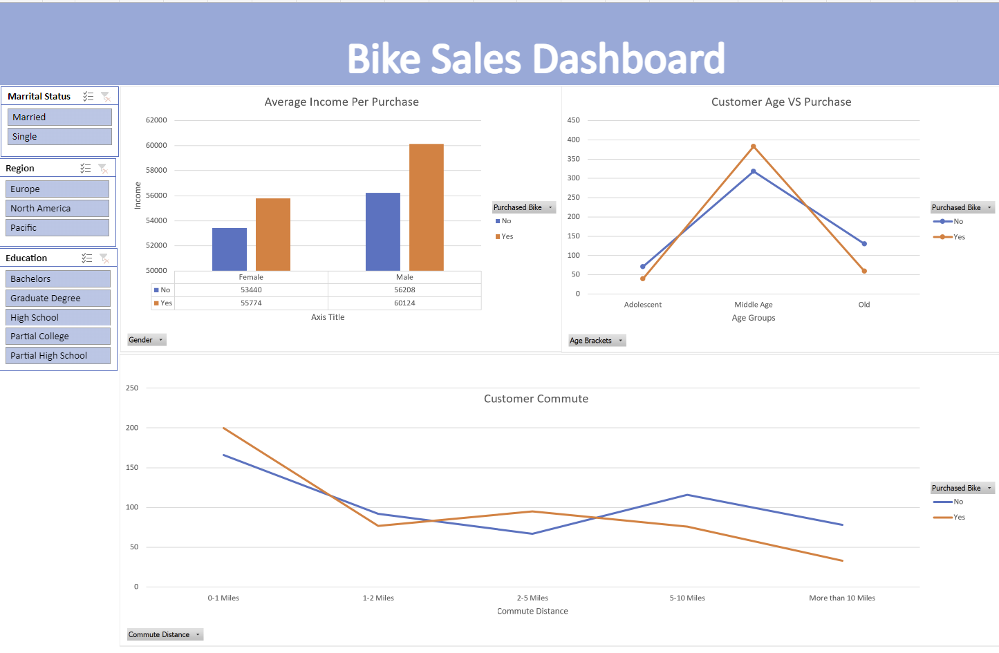

More About Me
Dear Recruiters,
I graduated from University of California, San Diego, with a Bachelor of Science in Probability and Statistics and a minor in Business in June 2022.
Being highly attentive to details, I strive for accuracy and consistency in my daily individual performance, team contributions, and task completion.
I will describe myself as an empathetic listener with strong communication skills. I am also very patient and have great time management skills.
I look forward to speaking with you about my academic and professional background. I am certain that my collaboration and strengths will bring an invaluable new facet
to your existing team.
Thank you for your time and consideration.
Sincerely,
Sharon Huang

Explored COVID data with SQL. Compared different variables in the dataset to better understand the impact COVID left with the world.

Used Tableau Public to create charts, graphs, and maps for the COVID datasets to better visualize the overall impact COVID left on the world.

Used Python to clean and explore the movies dataset and find the correlations of the different variables of the movies. The packages used are numpy, pandas, and seaborn. Discovered that votes and budget have the highest correlation with gross earning.
Used SQL to explore the Nashville Housing data. Cleaned the data with SQL which made the data cleaner and easier to analyze.

Used Microsoft Excel to clean and reorganized dataset. Created pivot tables and a dahsboard for the bike dataset and discovered the correlation of different variables with bike purchase. Discovered that middle-age male tend to be more likely buy bikes.

Used MSSQL to clean the necessary datasets and then used Power Query and Power BI to create a dashboard based on the business demand.